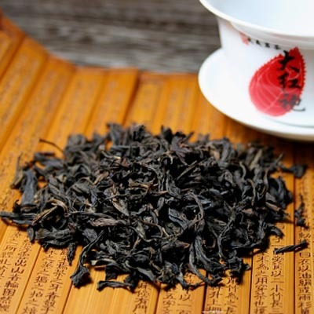

introduction

Green tea (Green Tea) is one of the main teas in China. It refers to beverages made by taking new leaves or buds of tea trees without fermentation, through greening, shaping, and drying. The color of the finished product and the brewed tea soup preserve the green color of fresh tea leaves. Regular drinking green tea can prevent cancer, reduce fat and lose weight, and also reduce the nicotine damage to smokers.

Black tea is a fully fermented tea. It is made of suitable tea tree new tooth leaves as a raw material, refined by a series of processes including withering, twisting (cutting), fermentation and drying. Withering is an important process in the initial production of black tea. Black tea was called "black tea" during the initial production. Black tea is named for the tea soup and the red color of the leaves after the brewing of dry tea.